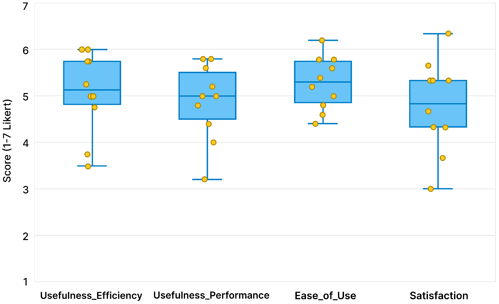
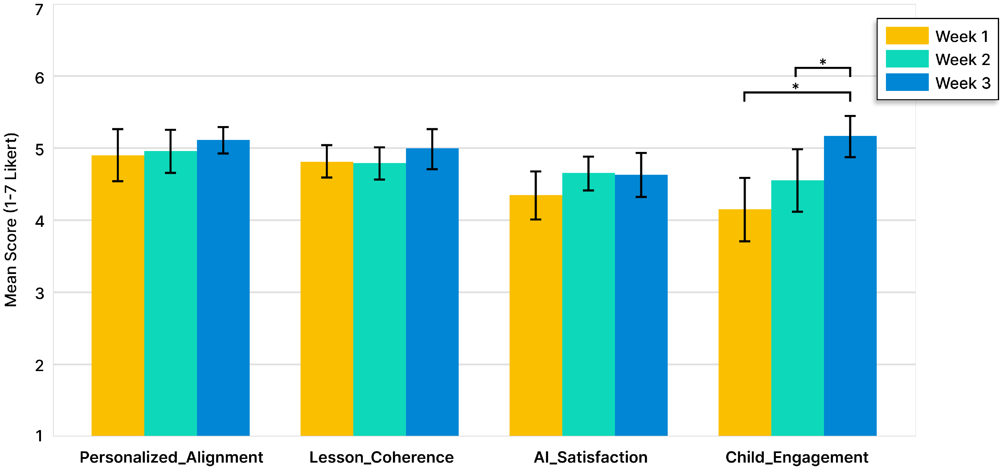
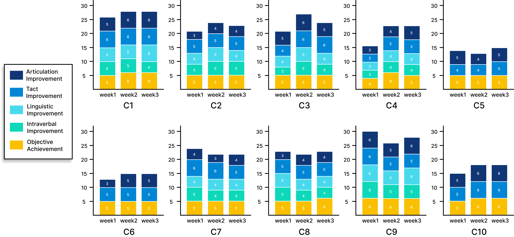

LingoLift: Supporting Educators in Personalized Oral Language Teaching for Autistic Children through Content Generation
支持孤独症儿童个性化口语教学的生成式人工智能系统
支持孤独症儿童个性化口语教学的生成式人工智能系统
Autistic children exhibit heterogeneous oral language impairments, necessitating educators to implement personalized teaching content. However, preparing personalized materials remains time-intensive and difficult to maintain coherence, while generative AI’s recent advances in creating customized content show potential to support this process. We first conducted video analysis from educators’ one-on-one classes with autistic students and conducted interviews with therapists to understand their challenges in current teaching practices. Then, we developed a generative AI empowered prototype, LingoLift, which supports educators to create interest-based, ability-adapted, and coherent teaching materials according to children’s profiles. Finally, we conducted a three-week deployment study with 10 educator-student dyads completing 30 lessons with LingoLift in a specialized education school. Results showed that LingoLift significantly improved lesson preparation efficiency, reduced educators’ workload, and enabled children to achieve positive learning outcomes. We observed educators’ adaptive extensions and innovations, revealing insights into design considerations and future opportunities for AI-assisted inclusive education.
Autism Spectrum Disorder (ASD) is characterized by impairments or delays in oral language development [15, 25], with individuals exhibiting substantial heterogeneity [36]. This heterogeneity manifests in broad differences in oral language abilities (ranging from producing single syllables to constructing complex sentences [73]), diverse impairment patterns (including limited spontaneous communication [28, 54], lexical-intentional dissociation [65], and rigid syntactic structures [1]), as well as co-occurring conditions such as attentional deficits and motivational disorders [58, 61, 86]. Early oral language development significantly predicts long-term quality of life and reduces social isolation risks among autistic children [53, 67].
Given the multidimensional heterogeneity of autistic children, personalized teaching content design requires integrating hierarchical goal setting and motivational stimulation based on individual characteristics [33] [64]. Educators play a crucial role in designing and implementing such teaching practices [30] [79]. They develop and continuously refine teaching plans based on their familiarity with children [78], while demonstrating exceptional flexibility in addressing diverse learning challenges faced by autistic children [33]. However, this work is typically time-consuming [77] [31] and lacks appropriate resources [49] [5], constraining teachers’ capacity to meet individual needs [75].
Recent advances in generative AI have significantly improved learning outcomes for autistic children by creating customized content that matches cognitive levels [52, 90], integrates personal interests [57, 101], and provides real-time responses [48, 49, 84, 101]. These technologies help educators rapidly construct lesson plans and obtain teaching materials [17, 21, 60, 71, 72, 75], providing new possibilities for supporting oral language educators’ teaching practices.
Therefore, we aim to further explore: RQ1: How can we design and implement AI tools to support educators in providing personalized oral language teaching for autistic children? RQ2: How do AI generation capabilities change and support educators’ personalized teaching practices?
We first conducted a formative study to understand current personalized teaching challenges and identify AI opportunities, including observations of 30 autism speech education sessions, interviews with 3 language education experts, and analysis of teaching materials. Based on findings of Learning Incoherence Within Lessons and personalized teaching content design strategies, we developed LingoLift—a GenAI–empowered system that intelligently generates personalized and coherent lesson plans and materials based on children’s oral language development and preferences, directly projected into classroom environments. We then conducted a 3-week deployment study with 10 student groups completing three sessions using LingoLift to evaluate performance and answer RQ2. Results show LingoLift created coherent, effective personalized learning experiences, streamlining complex manual processes, enhancing teaching inspiration, and enabling real-time contextual support. We discovered teachers’ unexpected innovative applications and adaptive compensations, highlighting the complementary synergy between educator creativity and AI. In summary, the contributions of this study are as follows: (1) A formative study revealing current teaching practices and challenges in autistic children’s personalized oral language teaching. (2) Development of LingoLift, a generative AI-powered system supporting educators’ autism oral language teaching through skill tracking and generation of personalized, coherent lesson plans and visual materials. (3) A three week deployment study demonstrating how teachers use LingoLift and how generative AI supports traditional oral language teaching practices.
Teacher's usage flow of LingoLift: 1) Manage Profile: adjust children's language ability and learning interests (manual input required for initial setup, with automatic updates based on learning progress); 2) Prepare Lesson: LingoLift generates personalized learning plans and materials tailored to child's capabilities and interests; 3) Deliver Lesson: Seamless integration with projection systems enabling direct use of generated content for instruction.

Fig. 1. Teacher’s usage flow of LingoLift: 1) Manage Profile: adjust children’s language ability and learning interests (manual input required for initial setup, with automatic updates based on learning progress); 2) Prepare Lesson: LingoLift generates personalized learning plans and materials tailored to child’s capabilities and interests; 3) Deliver Lesson: Seamless integration with projection systems enabling direct use of generated content for instruction.
To help educators streamline lesson preparation and management workflows, ensure learning theme coherence and content integration, and achieve effective personalized teaching, we developed LingoLift, a generative AI empowered system supporting educators in personalized oral language instruction for autistic children. Figure 4 illustrates the system workflow: (1) Child Profile Management: configuring children’s language abilities and interests, with manual initial setup and automatic progress-based updates; (2) Lesson Preparation: generating personalized learning plans and materials; and (3) Lesson Delivery: seamless integration with projection systems that enables direct use of generated content for teaching.
LingoLift implements assessment-based personalization aligning individual language capabilities with learning objectives. Educators input child profiles including assessment results across four domains: articulation, tact (naming), linguistic structures, and intraverbal skills. These dimensions correspond to four instructional components: articulation practice, vocabulary acquisition, grammar exercises, and conversational training. Through systematic mapping between language skill domains and constituent tracking sub-items, the system generates stratified learning objectives matching each child’s developmental stage, ensuring appropriate cognitive load while promoting skill advancement across language domains.
LingoLift incorporates individual children’s interests and preferred reinforcement stimuli into thematic lesson design. The system maintains detailed interest profiles for each child, enabling generation of contextually relevant learning scenarios. LingoLift addresses content fragmentation by generating unified material sets maintaining thematic coherence across learning modules. Under a single theme, the system produces materials supporting articulation practice, naming exercises, linguistic structure development, and conversational training, ensuring instructional continuity. The system maintains learning continuity through automated progress tracking and adaptive content sequencing. LingoLift records each child’s learning content across sessions, and recommends advancement objectives at increased difficulty levels and review objectives for skill consolidation, creating coherent learning trajectories spanning multiple sessions.
LingoLift replaces traditional paper-based materials with projection-based materials addressing content limitations and preparation time constraints. The system substitutes static, commercially-produced cards with dynamically generated digital content, eliminating material availability constraints while reducing educators’ preparation time.

System design of LingoLift, illustrating the main modules for profile management, lesson generation, and classroom delivery.
To evaluate LingoLift’s usability, we conducted a three-week field deployment study at a special education school with 10 teacher-student dyads (special education teachers paired with autistic students). The dyads used LingoLift to replace their traditional oral language teaching, completing 30 lessons total (3 per dyad). The study examined how LingoLift influences teachers’ lesson preparation and teaching processes, as well as students’ engagement and learning outcomes through three consecutive oral language lessons per dyad. All participants provided informed consent, with children’s consent obtained through their parents. This study was approved by the institutional review board.
We conducted school-wide screening to identify autistic children with oral language learning needs and their assigned teachers, recruiting 10 teacher-student dyads. Child participants (C1–C10) were diagnosed with autism spectrum disorder and presented with oral language developmental delays. Children’s language ability levels were assessed by their assigned teachers based on VB-MAPP, spanning Level 1 (basic vocabulary and simple requests), Level 2 (short phrases and expanded comprehension), and Level 3 (sentence formation and conversational skills). Teacher participants (T1–T10) were special education teachers or rehabilitation therapists with professional teaching experience.
The study was a three-week field deployment divided into three phases: onboarding workshop, field deployment, and evaluation. We employed a mixed-methods approach combining quantitative and qualitative analyses. Our analysis incorporated three primary data sources: self-reported questionnaires, interview transcripts, and video observation with system-generated content analysis.

Fig. 6. Photos taken from the field deployment study. (a) The language training classroom used for the study, (b) The tablets pre-installed with LingoLift, (c) Teachers learning to use LingoLift, (d) Teachers and children engaged in lesson activities.


Fig. 7. System evaluation and weekly lesson evaluation. (a) Box plots of post-study questionnaire results (1–7 Likert); individual data points and box plots display response distribution with mean ± SD. (b) Teacher post-lesson ratings for four dimensions across Week 1–3 with error bars indicating standard error. Asterisks (*) denote statistically significant differences at p < 0.05.

Fig. 8. Children’s learning outcomes over three weeks. Left panel: individual children’s weekly progress across five skill dimensions (Articulation, Tact, Linguistic, Intraverbal, and Objective Achievement). Right panel: overall mean performance for Learning Objective Achievement and Oral Language Skills Development. Error bars show standard deviation.
Our field deployment demonstrated that LingoLift exhibits good usability in educators’ practices, supporting children’s personalized learning and language skill development. AI content generation enhanced traditional teaching practices by simplifying complex manual processes and enhancing teaching inspiration, enriching learning materials and enabling flexible content adaptation. Beyond its intended functionality, teachers innovatively extended LingoLift’s capabilities through creative adaptations and multi-sensory compensations.
Teachers evaluate each lesson on a 1–7 scale to assess whether learning objectives were achieved and score language skill improvement. As shown in Figure 8, children successfully achieved the established classroom learning objectives (M = 5.27, SD = 0.52), demonstrating that LingoLift generated appropriately personalized learning content. The greatest progress occurred in tact skills (M = 5.17, SD = 1.03), reflecting LingoLift’s advantages in providing visual-contextual learning support for concrete language concepts. Progress in linguistic and intraverbal remained minimal, with teachers explaining that “advanced language skills are difficult to produce quantifiable progress within 3 weeks” (T5, T7).
Traditional autism education preparation required teachers to navigate multiple platforms and documents, then manually integrate scattered resources—a labor-intensive process. LingoLift systematically integrates this workflow: “Now I can handle all preparation work with just a tablet” (T2). All teachers (T1–T10) reported significant time savings. Multiple teachers emphasized how the system replaced time-intensive resource gathering, with one reflecting: “I used to search for teaching resources myself… which required substantial time investment.” Taken together, these findings highlight how LingoLift streamlines complex manual processes, enhances teaching inspiration, and provides real-time contextual support, illustrating the potential of generative AI to enhance educational outcomes through human–AI collaboration in special education contexts.